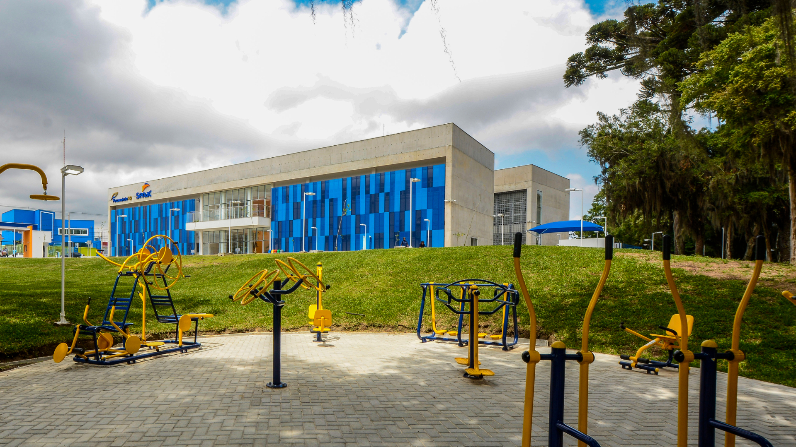

a imagem mostra a construção do sesc a resolução é 800X600 e seu tamanho é de 52.6 KB

a imagem mostra a construção do sesc a resolução é 800X600 e seu tamanho é de 96.8 KB

a imagem mostra a construção do sesc a resolução é 800X600 e seu tamanho é de 263 KB

a imagem mostra a construção do sesc a resolução é 800X600 e seu tamanho é de 60.7 KB

a imagem mostra a fachada do senac e o estacionamento do senac em frente a entrada de pedestres resolução é 275X183 e seu tamanho é de 3.9 KB

a imagem mostra a fachada do senac e o estacionamento do senac em frente a entrada de pedestres resolução é 275X183 e seu tamanho é de 5.9 KB

a imagem mostra a fachada do senac e o estacionamento do senac em frente a entrada de pedestres resolução é 275X183 e seu tamanho é de 23.2 KB

a imagem mostra a fachada do senac e o estacionamento do senac em frente a entrada de pedestres resolução é 275X183 e seu tamanho é de 4.5 KB

a imagem mostra a fachada do senac e a entrada de pedestres resolução é 1500X744 e seu tamanho é de 102.6 KB

a imagem mostra a fachada do senac e a entrada de pedestres resolução é 1500X744 e seu tamanho é de 474 KB

a imagem mostra a fachada do senac e a entrada de pedestres resolução é 1500X744 e seu tamanho é de 529.2 KB

a imagem mostra a fachada do senac e a entrada de pedestres resolução é 1500X744 e seu tamanho é de 135.8 KB

a imagem mostra a fachada de lado do senac e a entrada de pedestres resolução é 1920X1080 e seu tamanho é de 192.7 KB

a imagem mostra a fachada de lado do senac e a entrada de pedestres resolução é 1920X1080 e seu tamanho é de 2.4 MB

a imagem mostra a fachada de lado do senac e a entrada de pedestres resolução é 1920X1080 e seu tamanho é de 866.5 KB

a imagem mostra a fachada de lado do senac e a entrada de pedestres resolução é 1920X1080 e seu tamanho é de 192.7 KB

a imagem mostra a fachada do sesc junto com o predio inteiro do sesc resolução é 1280X720 e seu tamanho é de 98.4 KB

a imagem mostra a fachada do sesc junto com o predio inteiro do sesc resolução é 1280X720 e seu tamanho é de 259.8 KB

a imagem mostra a fachada do sesc junto com o predio inteiro do sesc resolução é 1280X720 e seu tamanho é de 457.7 KB

a imagem mostra a fachada do sesc junto com o predio inteiro do sesc resolução é 1280X720 e seu tamanho é de 109 KB